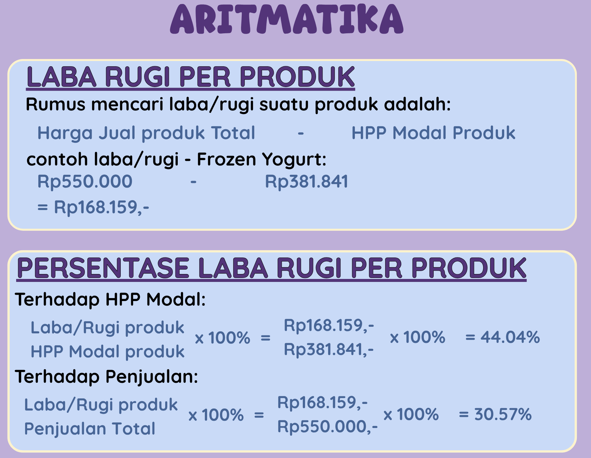
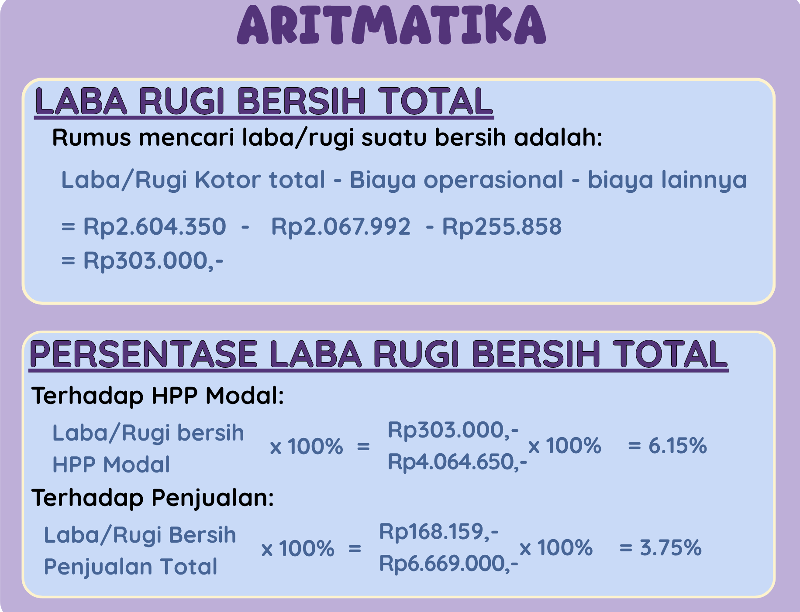
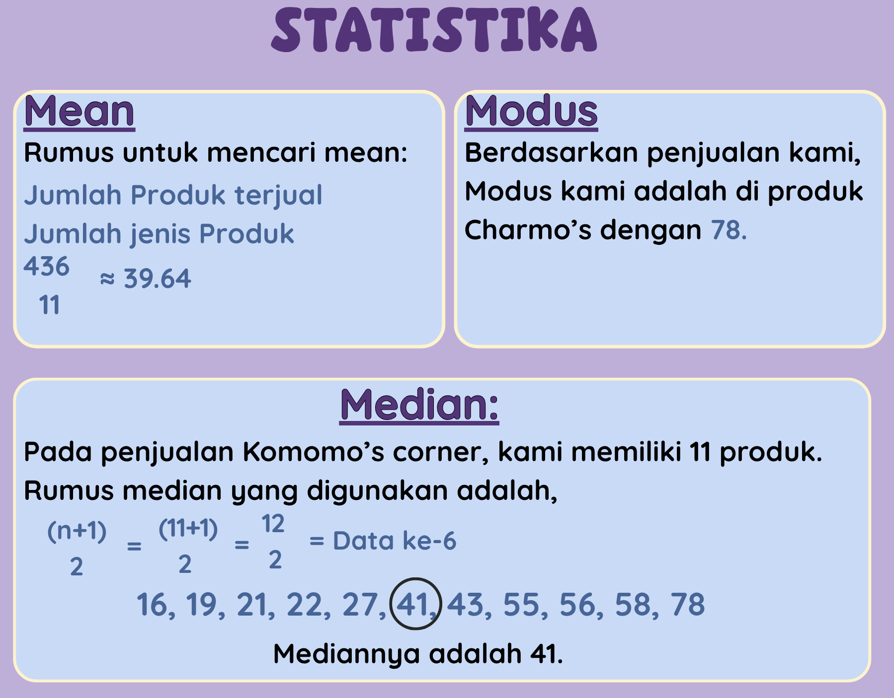
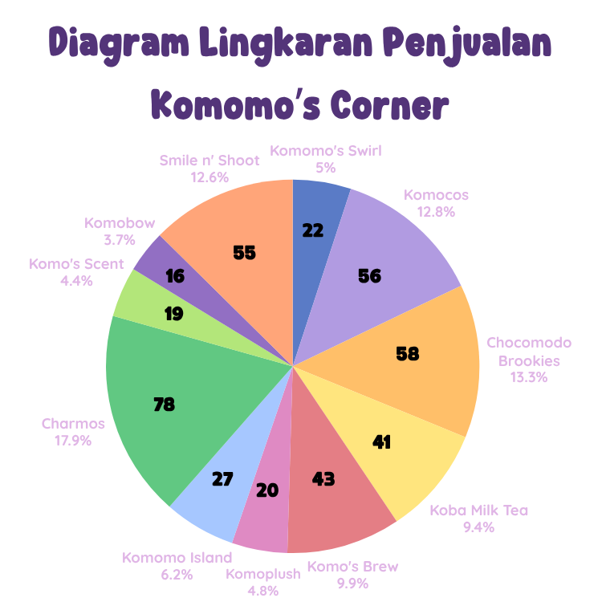
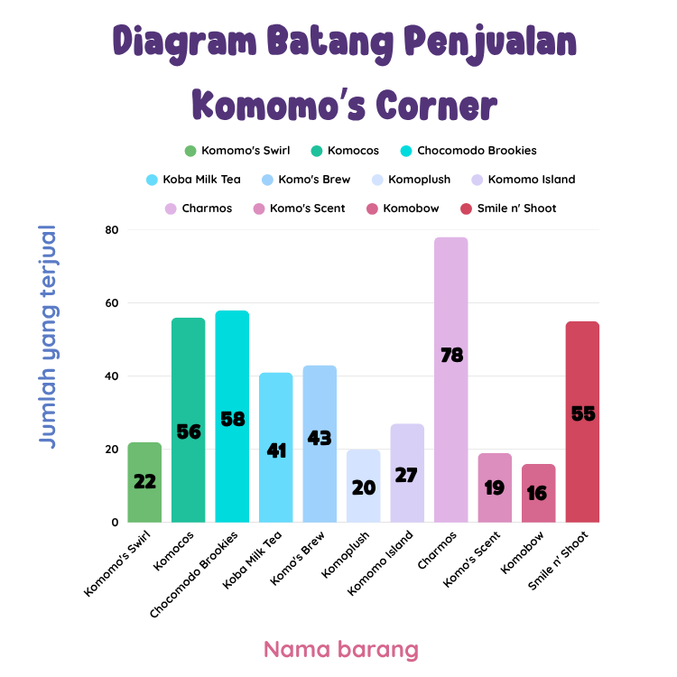
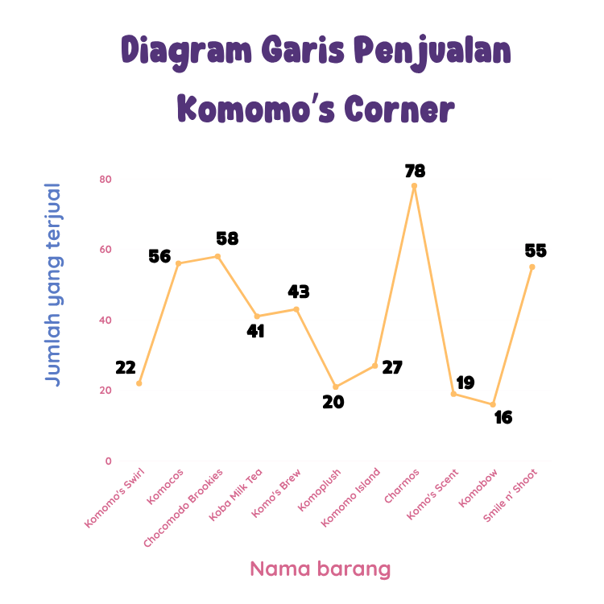

Description


Berdasarkan data tersebut, produk yang paling banyak terjual adalah Charmos (acrylic keychain). Produk ini banyak digemari, terutama remaja, karena kualitas gantungan kunci yang tinggi dan gambar yang unik. Produk ini berhasil terjual sebanyak 78 buah (17.9%). Selanjutnya, diikuti oleh produk Chocomodo Brookies (brookies). Produk ini banyak dinikmati, terutama remaja, karena rasa yang enak dan tekstur yang lembut. Produk ini berhasil terjual sebanyak 58 buah (13.3%). Selanjutnya, diikuti oleh produk Komocos (tacos). Produk ini banyak dinikmati, terutama orangtua dan remaja, karena rasa yang enak dan menarik. Produk ini berhasil terjual sebanyak 56 buah (12.8%).
Selanjutnya, diikuti oleh produk Smile n’ Shoot (photobooth). Produk ini banyak digemari, terutama remaja, karena kualitas polaroid yang bagus dan harga yang murah. Produk ini berhasil terjual sebanyak 55 buah (12.6%). Selanjutnya, diikuti oleh produk Komo’s Brew (kopi susu). Produk ini banyak dinikmati, terutama guru, karena kualitas kopi yang tinggi dengan campuran fresh milk dan dapat ditambahkan dengan gula aren (opsional). Produk ini berhasil terjual sebanyak 43 buah (9.9%). Selanjutnya, diikuti oleh produk Koba Milk Tea (milk tea). Produk ini banyak dinikmati, terutama remaja, karena rasa milk tea yang tidak terlalu manis dengan rasa boba yang kental dan manis. Produk ini berhasil terjual sebanyak 41 buah (9.4%). Selanjutnya, diikuti oleh produk Komomo Island (slime). Produk ini banyak digemari, terutama anak-anak dan remaja, karena konsep dari slime kami yang unik dan tekstur yang lembut sehingga seru untuk dimainkan. Produk ini berhasil terjual sebanyak 27 buah (6.2%).
Selanjutnya, diikuti oleh produk Komomo’s Swirl (frozen yoghurt). Produk ini banyak dinikmati, terutama remaja, karena kualitas yoghurt yang tinggi dan rasa yoghurt yang enak dilengkapi dengan topping seperti chocolate drizzle, buah-buahan, dan oreo. Produk ini berhasil terjual sebanyak 22 buah (5%). Selanjutnya, diikuti oleh produk Komoplush (boneka rajut). Produk ini banyak digemari, terutama remaja dan guru, karena desain boneka yang lucu dan dikarenakan stok yang limited sehingga saat PO terjual sebanyak 15 buah dan saat OTS terjual sebanyak 5 buah. Total produk ini yang berhasil terjual adalah sebanyak 20 buah (4.8%). Selanjutnya, diikuti oleh produk Komo’s Scent (scented candles). Produk ini banyak digemari, terutama remaja, karena aroma yang khas dan wadah yang unik. Produk ini berhasil terjual sebanyak 19 buah (4.4%). Terakhir, diikuti oleh produk Komobow (pita batik). Produk ini banyak digemari, terutama remaja, karena desain kain batik yang menarik dan adanya nuansa budaya khas Indonesia. Produk ini berhasil terjual 16 buah (3.7%). Berdasarkan data berikut, produk yang terjual paling sedikit adalah produk Komomo’s Swirl, Komoplush, Komo’s Scent, dan Komobow. Hal ini terjadi dikarenakan stok yang kami sediakan terbatas.
Berdasarkan data tersebut, produk yang paling banyak terjual adalah Charmos (acrylic keychain). Produk ini banyak digemari, terutama remaja, karena kualitas gantungan kunci yang tinggi dan gambar yang unik. Produk ini berhasil terjual sebanyak 78 buah. Selanjutnya, diikuti oleh produk Chocomodo Brookies (brookies). Produk ini banyak dinikmati, terutama remaja, karena rasa yang enak dan tekstur yang lembut. Produk ini berhasil terjual sebanyak 58 buah. Selanjutnya, diikuti oleh produk Komocos (tacos). Produk ini banyak dinikmati, terutama orangtua dan remaja, karena rasa yang enak dan menarik. Produk ini berhasil terjual sebanyak 56 buah.
Selanjutnya, diikuti oleh produk Smile n’ Shoot (photobooth). Produk ini banyak digemari, terutama remaja, karena kualitas polaroid yang bagus dan harga yang murah. Produk ini berhasil terjual sebanyak 55 buah. Selanjutnya, diikuti oleh produk Komo’s Brew (kopi susu). Produk ini banyak dinikmati, terutama guru, karena kualitas kopi yang tinggi dengan campuran fresh milk dan dapat ditambahkan dengan gula aren (opsional). Produk ini berhasil terjual sebanyak 43 buah. Selanjutnya, diikuti oleh produk Koba Milk Tea (milk tea). Produk ini banyak dinikmati, terutama remaja, karena rasa milk tea yang tidak terlalu manis dengan rasa boba yang kental dan manis. Produk ini berhasil terjual sebanyak 41 buah. Selanjutnya, diikuti oleh produk Komomo Island (slime). Produk ini banyak digemari, terutama anak-anak dan remaja, karena konsep dari slime kami yang unik dan tekstur yang lembut sehingga seru untuk dimainkan. Produk ini berhasil terjual sebanyak 27 buah.
Selanjutnya, diikuti oleh produk Komomo’s Swirl (frozen yoghurt). Produk ini banyak dinikmati, terutama remaja, karena kualitas yoghurt yang tinggi dan rasa yoghurt yang enak dilengkapi dengan topping seperti chocolate drizzle, buah-buahan, dan oreo. Produk ini berhasil terjual sebanyak 22 buah. Selanjutnya, diikuti oleh produk Komoplush (boneka rajut). Produk ini banyak digemari, terutama remaja dan guru, karena desain boneka yang lucu dan dikarenakan stok yang limited sehingga saat PO terjual sebanyak 15 buah dan saat OTS terjual sebanyak 5 buah. Total produk ini yang berhasil terjual adalah sebanyak 20 buah. Selanjutnya, diikuti oleh produk Komo’s Scent (scented candles). Produk ini banyak digemari, terutama remaja, karena aroma yang khas and wadah yang unik. Produk ini berhasil terjual sebanyak 19 buah. Terakhir, diikuti oleh produk Komobow (pita batik). Produk ini banyak digemari, terutama remaja, karena desain kain batik yang menarik dan adanya nuansa budaya khas Indonesia. Produk ini berhasil terjual 16 buah. Berdasarkan data berikut, produk yang terjual paling sedikit adalah produk Komomo’s Swirl, Komoplush, Komo’s Scent, dan Komobow. Hal ini terjadi dikarenakan stok yang kami sediakan terbatas.
Berdasarkan data tersebut, produk yang paling banyak terjual adalah Charmos (acrylic keychain). Produk ini banyak digemari semua orang, terutama remaja, karena kualitas gantungan kunci yang tinggi dan gambar serta makna yang unik. Produk ini berhasil terjual sebanyak 78 buah. Selanjutnya, diikuti oleh produk Chocomodo Brookies (brookies). Produk ini banyak dinikmati semua orang, terutama remaja, karena rasa yang enak dan tekstur yang lembut. Produk ini berhasil terjual sebanyak 58 buah. Selanjutnya, diikuti oleh produk Komocos (tacos). Produk ini banyak dinikmati semua orang, terutama orangtua dan remaja, karena rasanya yang enak dan menarik. Produk ini berhasil terjual sebanyak 56 buah.
Selanjutnya, diikuti oleh produk Smile n’ Shoot (photobooth). Produk ini banyak digemari, terutama remaja, karena kualitas polaroid yang bagus dan harga yang murah. Produk ini berhasil terjual sebanyak 55 buah. Selanjutnya, diikuti oleh produk Komo’s Brew (kopi susu). Produk ini banyak dinikmati, terutama guru, karena kualitas kopi yang tinggi dengan campuran fresh milk dan dapat ditambahkan dengan gula aren (opsional). Produk ini berhasil terjual sebanyak 43 buah. Selanjutnya, diikuti oleh produk Koba Milk Tea (milk tea). Produk ini banyak dinikmati semua orang, terutama remaja, karena rasa milk tea yang tidak terlalu manis dengan rasa boba yang kental dan manis. Produk ini berhasil terjual sebanyak 41 buah. Selanjutnya, diikuti oleh produk Komomo Island (slime). Produk ini banyak digemari semua orang, terutama anak-anak and remaja, karena konsep dari slime kami yang unik and tekstur yang lembut sehingga seru untuk dimainkan. Produk ini berhasil terjual sebanyak 27 buah.
Selanjutnya, diikuti oleh produk Komomo’s Swirl (frozen yoghurt). Produk ini banyak dinikmati semua orang, terutama remaja, karena kualitas yoghurt yang tinggi dan rasa yoghurt yang enak dilengkapi dengan topping seperti chocolate drizzle, buah-buahan, dan oreo. Produk ini berhasil terjual sebanyak 22 buah. Selanjutnya, diikuti oleh produk Komoplush (boneka rajut). Produk ini banyak digemari semua orang, terutama remaja dan guru, karena desain boneka yang lucu dan dikarenakan stok yang limited sehingga saat PO terjual sebanyak 15 buah dan saat OTS terjual sebanyak 5 buah. Total produk ini yang berhasil terjual adalah sebanyak 20 buah. Selanjutnya, diikuti oleh produk Komo’s Scent (scented candles). Produk ini banyak digemari semua orang, terutama remaja, karena aroma yang khas dan wadah yang unik. Produk ini berhasil terjual sebanyak 19 buah. Terakhir, diikuti oleh produk Komobow (pita batik). Produk ini banyak digemari semua orang, terutama remaja, karena desain kain batik yang menarik dan adanya nuansa budaya khas Indonesia. Produk ini berhasil terjual 16 buah. Berdasarkan data berikut, produk yang terjual paling sedikit adalah produk Komomo’s Swirl, Komoplush, Komo’s Scent, dan Komobow. Hal ini terjadi dikarenakan stok yang kami sediakan terbatas.